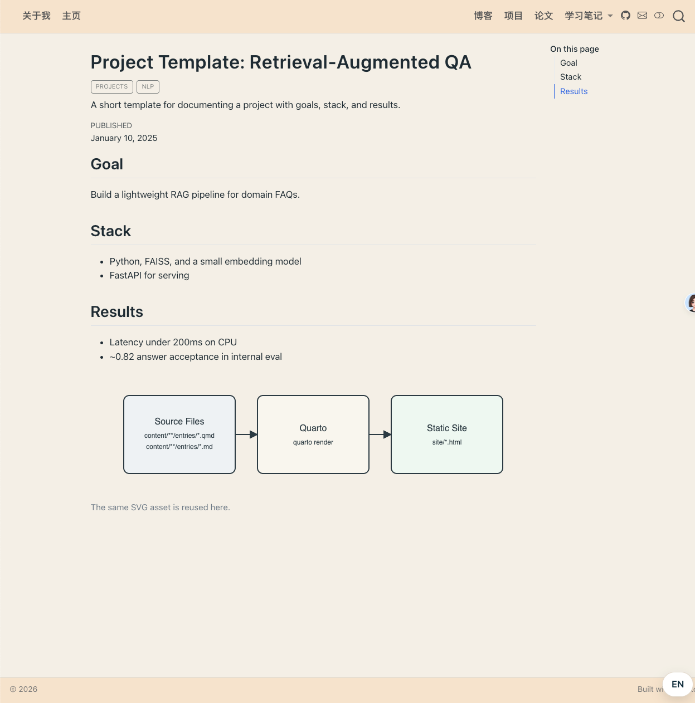

Quarto-Blogs-Template
Quarto
Blog

项目介绍
这是一个基于 Quarto 构建的现代化个人博客/网站模板，专为研究人员、学生和开发者设计，用于展示研究笔记、项目成果、论文阅读心得和学习记录。
主要特点
- 模块化结构：支持博客、项目、论文阅读和学习笔记等多种内容类型
- 中英文双语支持：内置语言切换功能，轻松实现内容国际化
- 响应式设计：适配各种设备屏幕尺寸
- 快速开发：提供一键脚本，简化本地预览、构建和发布流程
- 自动聚合：首页自动聚合各模块最新内容
- 可扩展性：支持自定义样式和内容结构
环境要求
- Quarto：安装指南
- Bash：用于运行脚本（Windows 用户可使用 WSL 或 Git Bash）
- rsync：用于发布时的文件同步（部分脚本需要）
快速开始
本地预览
./scripts/preview.sh # 启动本地服务器（热更新）构建项目
./scripts/build.sh # 构建网站到 site/ 目录发布网站
./scripts/publish.sh # 备份旧 docs/ 并同步 site/ -> docs/详细使用说明
目录结构（核心）
├── content/ # 所有可渲染内容
│ ├── assets/ # 全站共享图片素材
│ ├── blogs/entries/ # 博客文章
│ ├── projects/entries/ # 项目介绍
│ ├── papers/entries/ # 论文阅读笔记
│ └── learning-notes/ # 学习笔记（含子模块）
├── includes/ # 页面片段（如语言切换按钮）
├── pages/ # 页面文件
│ ├── index.qmd # 默认首页（About Me）
│ └── home.qmd # Home 页面（聚合各模块最新内容）
├── scripts/ # 一键脚本
├── site/ # 构建产物（默认输出目录）
├── docs/ # 发布目录（GitHub Pages）
├── styles.css # 全站样式
└── _quarto.yml # 项目配置文件新增内容
1. 新增博客文章
- 进入博客文章目录：
content/blogs/entries/ - 新建文件，例如
my-blog-post.qmd - 添加 YAML 头部并开始写作：
---
title: "我的博客文章"
date: 2026-01-13
categories: [blogs]
description: "这是一篇示例博客文章"
---- 插入图片（使用相对路径）：
2. 新增项目
- 进入项目目录：
content/projects/entries/ - 新建文件，例如
my-project.qmd - 按照上述博客文章的格式编写内容
3. 新增论文阅读笔记
- 进入论文目录：
content/papers/entries/ - 新建文件，例如
paper-review.qmd - 按照上述格式编写内容
4. 新增学习笔记
- 进入学习笔记目录：
content/learning-notes/ - 可以创建新的子模块（如
lesson4/）并在其中添加entries/目录 - 或者在现有子模块中添加新笔记
语言切换功能
项目支持中英文双语内容切换，使用方法如下：
::: {.lang-zh}
这是中文内容
:::
::: {.lang-en}
This is English content
:::在导航栏和页面标题中也可以使用 HTML 标签实现语言切换：
<span class="lang-en">About Me</span><span class="lang-zh">关于我</span>自定义样式
- 修改
styles.css文件可以自定义全站样式 - 支持自定义主题颜色、字体大小、布局等
脚本说明
1. 本地预览脚本 (preview.sh)
- 启动 Quarto 本地服务器
- 支持热更新，修改内容后自动刷新页面
- 默认端口：4321
2. 构建脚本 (build.sh)
- 构建网站到
site/目录 - 生成静态 HTML 文件
3. 发布脚本 (publish.sh)
- 备份旧的
docs/目录到backup/ - 构建网站
- 将构建产物从
site/同步到docs/（GitHub Pages 发布目录） - 自动清理旧备份（默认保留最近 3 个备份）
4. 渲染后清理脚本 (post-render-clean.sh)
- 在项目渲染后自动执行
- 清理嵌套目录结构
- 优化文件组织
5. 备份清理脚本 (prune-backups.sh)
- 清理旧的备份文件
- 可以手动运行以释放存储空间
配置文件说明
_quarto.yml
主要配置文件，包含： - 项目类型和输出目录 - 渲染规则和资源管理 - 网站导航栏和页脚设置 - 主题和格式配置
渲染规则
render:
- pages/index.qmd
- pages/home.qmd
- content/**/index.qmd
- content/**/entries/**/*.qmd
- content/**/entries/**/*.md资源管理
resources:
- assets/**
- content/assets/**部署
GitHub Pages
- 将项目推送到 GitHub 仓库
- 配置 GitHub Pages 从
docs/目录部署 - 运行
./scripts/publish.sh构建并发布网站
其他静态网站托管
- 运行
./scripts/build.sh构建网站 - 将
site/目录中的内容部署到你的托管服务
注意事项
tmp/目录用于存放草稿，不会被渲染和提交到 Gitbackup/目录存放发布备份，可随时清理- 确保所有内容文件都有正确的 YAML 头部
- 使用相对路径引用图片和其他资源
许可证
Apache License
贡献
欢迎提交 Issues 和 Pull Requests 来改进这个模板！